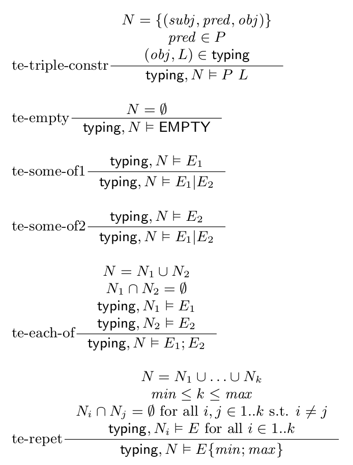

The Shapes Language
A shapes schema defines a set of named value constraints, and a set of named shapes. The names are used to refer to value constraints and shapes. The name of a value constraint is called value constraint label, and the name of a shape is called shape label.
Shapes Schema
Formally, a shapes schema
-
VCLabels is a set of value constraint labels, -
SLabels is a set of shape labels, and -
def is a definition function that with every value constraint label associates a value expression, and with every shape label associates a triple expression.
Typing of a Graph by a Shapes Schema
A typing is a set of node-shape associations of the form
Formally, let
Consider a shapes schema
An example of a typing of the graph
-
typing = { (inst:Issue1, <IssueShape>), (inst:User2, <UserShape>), (inst:User2, <EmployeeShape>) }
Value Expressions
Value expressions are associated with value constraint labels by the
That is, a value expression is any Boolean combination of atomic components that can be:
-
a shape label (
TripleExprRef ) that refers to a triple expression defined in the shapes schema, or -
a node constraint (
NodeConstraint ) that defines the set of allowed values for a node. In shapes schemas, a node constraint can be an arbitrary set that contains IRIs, literal values, or the special valueblank that stands for any blank node. In practice, in ShEx schemas, a node constraint is given as [TODO: reference to ShEx concrete syntax or primer]
Let
-
U = { ex:unassigned, ex:assigned, ex:unknown } -
V = { 1, 2, 5 } -
int the set of all integer values
Let
Examples of value expressions are
int AND (NOT V) U AND (S AND (NOT T))
A value expression defines a property of a single node. The semantics of a value expression is defined relative to a typing.
Formally, let
-
S is aTripleExprRef (in the ve-shaperef rule); -
NC is aNodeConstraint (in the ve-nodeconstr and ve-nodeconstr-brank rules); -
the
typing, node ⊢/ VExpr2 in the premise of the ve-neg rule means that it is impossible to construct a proof fortyping, node ⊢ VExpr .

Let
Whatever the value of
-
typing, 3 ⊢ int AND (NOT V) , whatever the value oftyping
If
-
typing, ex:assigned ⊢/ U AND (S AND (NOT T))
-
typing, ex:unknown ⊢ U AND (S AND (NOT T))
-
typing, ex:somenode ⊢/ U AND (S AND (NOT T))
Triple Expressions
Triple expressions are associated with shape labels and are used as definitions for shapes. They are defined by the following abstract syntax.
That is, an atomic triple expression can be
- the empty triple expression, that is only satisfied by a node which neighbourhood is empty, or
- a triple constraint, that defines a constraint on a single triple. A triple constraint is composed of a set of properties or inverse properties, that define the allowed values for the predicate of a triple, as well as a reference to value constraint, that is to be satisfied by the node in the triple opposite to the focus node.
Then, a triple expression can be obtained by combining two triple expressions using the some-of binary operator, denoted
- a some-of triple expression is satisfied if the neighbourhood of the node satisfies one of its sub-expressions, and
- an each-of triple expression is satisfied if the neighbourhood of the focus node can be split in two parts, and each part satisfies one of the sub-expressions.
Finally, a triple expression can be repeated by specifying a minimal cardinality that is a natural number, and a maximal cardinality that is a natural number of an unbounded value denoted as a star
Parentheses are not part of the syntax of triple expressions, we use them here for delimiting sub-expressions. Note that, as we will see in the sequel, the some-of and each-of operators are associative and commutative, therefore we use them with any number of sub-expressions without parentheses. That is, for instance, (x | y) | z is the same as x | (y | z), so we write simply x | y | z, and similarly for the each-of operator.
Let a set of value constraint labels
Let ex:p, ex:q, foaf:name, foaf:firstName, foaf:lastName be properties (that is, IRI), for some prefixes ex: and foaf:.
The following are examples of relatively simple triple expressions.
-
Triple constraints, with
P = (Prop ∪ InvProp) \ {ex:p} - {^ex:p} <VC_A>
- {foaf:name, foaf:lastName} <VC_string>
-
P <VC_int>
-
A repeated triple expression, which sub-expression is a triple constraint, with minimal cardinality 1 and maximal cardinality *
-
( {ex:p} <VC_int> )[1;*]
-
( {ex:p} <VC_int> )[1;*]
-
An each-of operator on top of three triple constraints:
- {ex:p} <VC_A> , {ex:q} <VC_int> , {ex:p} <VC_B>
-
A some-of operator on top of one triple constraint and one each-of sub-expression, the latter composed of one repeated triple constraint and one triple constraint.
-
{foaf:name} <VC_string> |
( ({foaf:firstName} <VC_string>)[1;*] , {foaf:lastName} <VC_string> )
-
{foaf:name} <VC_string> |
We now give a more complex triple expression.
Let a set of value constraint labels
Let is:reproducedBy, is:reportedBy, is:affectedBy be properties for some prefix is:.
An example of a triple expression is (the leading numbers are line numbers for future reference):
1. {is:reportedBy} <VC_UserAndClient> ,
2. {is:reproducedBy} <VC_Tester> ,
3. {is:reproducedBy} <VC_Programmer> ,
4. ( {^is:affectedBy} <VC_User> )[1;*] ,
5. {is:reproducedBy} <VC_NotProgrammerTester> ,
6. ( OtherProp <VC_AllNode> )[0;*]
where The above triple expression is an each-of expression on top of 6 sub-expressions, one on each line. The sub-expressions on lines 1., 2., 3., 5. are triple constraints. The sub-expression on line 4. is a repeted triple expression, with minimum cardinality 1 and maximum cardinality *. The sub-expression on line 6. is also a repeated triple expression, with minimum cardinality 0 and maximum cardinaliy *.
A triple expression defines a property on the neighbourhood of a node in a graph.
A set of triples
For a neighbourhood set of triples
-
P is a subset ofProp ∪ InvProp andV is a value constraint label (in rule te-tripleconstr); -
⊎ is the disjoint union of sets (in rules te-eachof and te-repet); -
min andmax are the minimum, respectively maximum cardinality in aRepetedTripleExpr (in rule te-repet).

A
TODO: examples of a satisfiability of triple expressions
Shapes Schemas with Stratified Negation
As we can see from the syntax, value expressions refer to shapes (through a
We start by some definitions that will allow us to define the stratification.
If
-
dep+(S,T) if there exists a value constraint labelV such thatV appears indef(S) , andT appears indef(V) , butT does not appear negated indef(V) . Recall thatdef(S) is a triple expression that defines the shape labelS , anddef(V) is a value constraint expression that defines the value constraint labelV . -
dep-(S,T) if there exists a value constraint labelV such thatV appears indef(S) , andT appears negated indef(V) .
Then the dependency relations
TODO: An example of a shapes schema and its dependency graph.
It is well known that in case of stratified negation, one can define what is called a stratification.
If the schema
TODO: an example of stratificaiton
Shapes schemas with stratified negation are guaranteed to have well founded semantics as it will be defined in the sequel. It is not necessarily the case for shapes schemas that might contain cycles of negative dependencies. Therefore, a shapes schema is allowed only if it has stratified negation, and we consider only shapes schemas with stratified negation in the sequel. Remark that it is easy to check whether a schema is with stratified negation: it is enough to construct the dependency graph, and check that it does not contain any cycle that goes through a negative dependency.
Maximal Typing
Stratified schemas allow for the definition of a unique typing, which is the one used to determine whether a node in a graph satisfies a value constraint. This typing is called the maximal typing, as intuitively it forces to add in the typing every provable node-shape association.
The maximal typing is defined using a stratification.
Let
-
SLabelsi = strat-1(1) ∪ ... ∪ strat-1(i) , -
VCLabelsi are the value constraint labels that appear indef(S) for someS inSLabelsi , and -
def1 isdef restricted onSLabelsi andVCLabelsi only.
Then we define a sequence of typings
-
typing1 is the union of all locally validtyping s ofG bySch1 ; -
for
i in2..k ,typingi is the union of all locally valid typings ofG bySchi that coincide withtypingi-1 on theSLabelsi-1 .
Note that because
The typing
TODO: an example of the sequence of typings